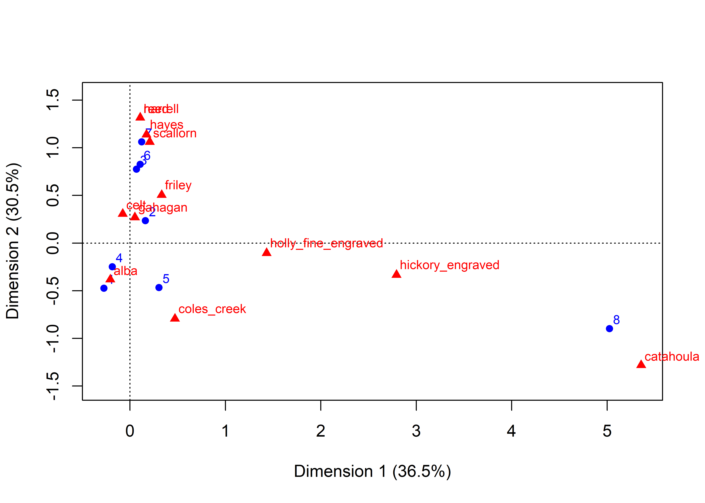
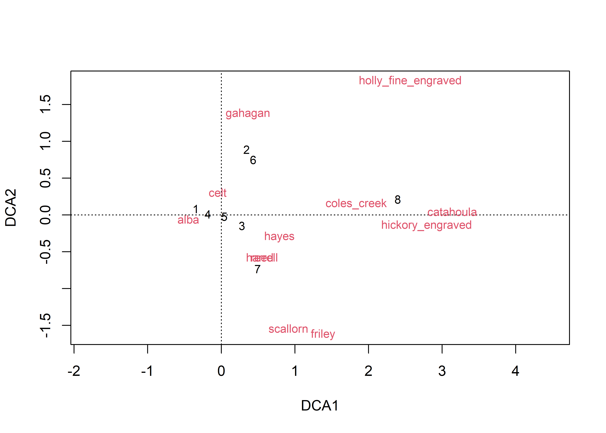
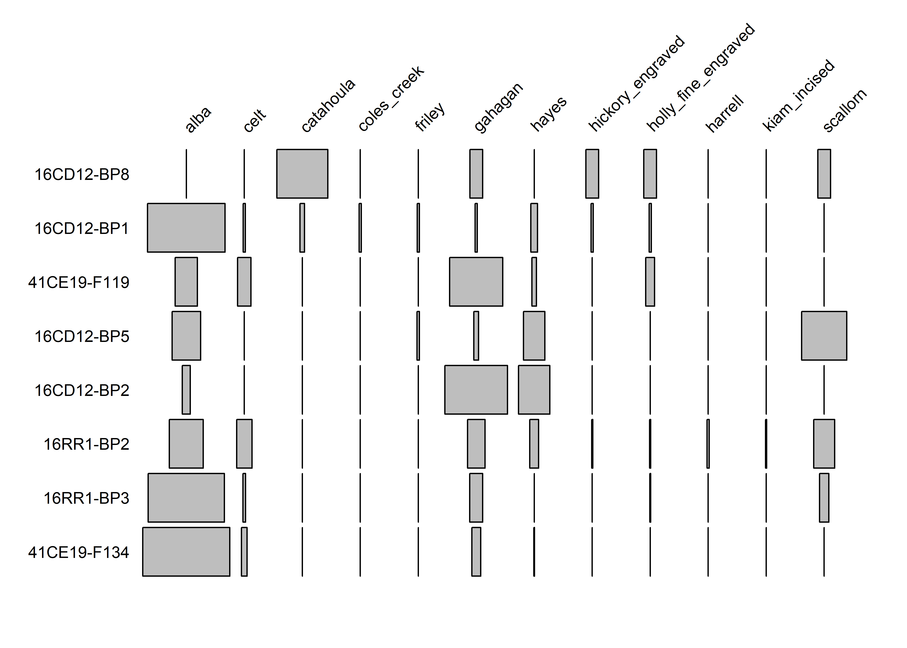
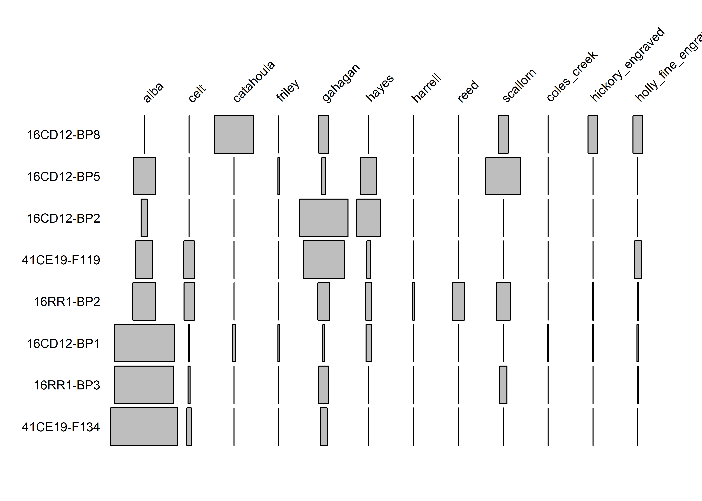
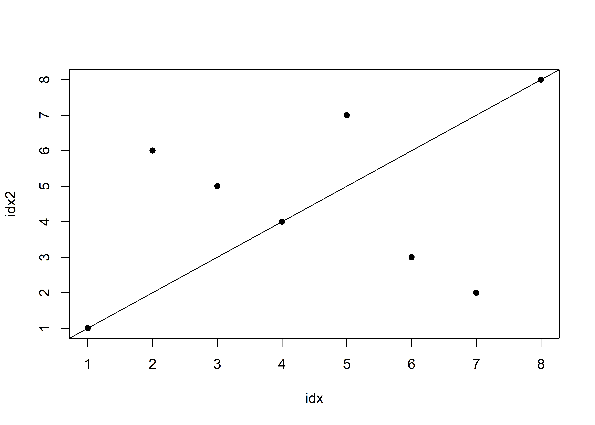

Chapter 2 Seriation
data <- read.csv("gahagan-diagnostics.csv")
data$context <- as.character(data$context)
rowSums(data[, 3:15])## [1] 184 23 109 119 46 13 43 8colSums(data[, 3:15])## alba celt catahoula
## 330 31 6
## friley gahagan hayes
## 2 71 26
## harrell reed scallorn
## 2 16 50
## coles_creek hickory_engraved holly_fine_engraved
## 1 3 6
## kiam_incised
## 1library(ca)
data.ca <- ca(data[, 3:15])
plot.ca(data.ca,
cex = .75)
library(vegan)
data.dec <- decorana(data[, 3:15])
plot(data.dec,
display = "both")
library(plotrix)
rowlbl <- data$context
idx <- rev(order(data.ca$rowcoord[, 1]))
data.pct <- prop.table(as.matrix(data[, 3:15]), 1) * 100
battleship.plot(data.pct[idx, ],
cex.labels = .75,
maxxspan=.75,
yaxlab=rowlbl[idx],
col="gray")
idx2 <- rev(order(data.dec$rproj[, 1]))
battleship.plot(data.pct[idx2, ],
cex.labels = .75,
maxxspan=.75,
yaxlab=rowlbl[idx2],
col="gray")
plot(idx, idx2, pch=16)
abline(a=0, b=1)